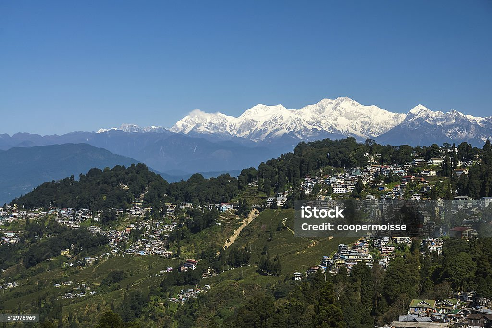
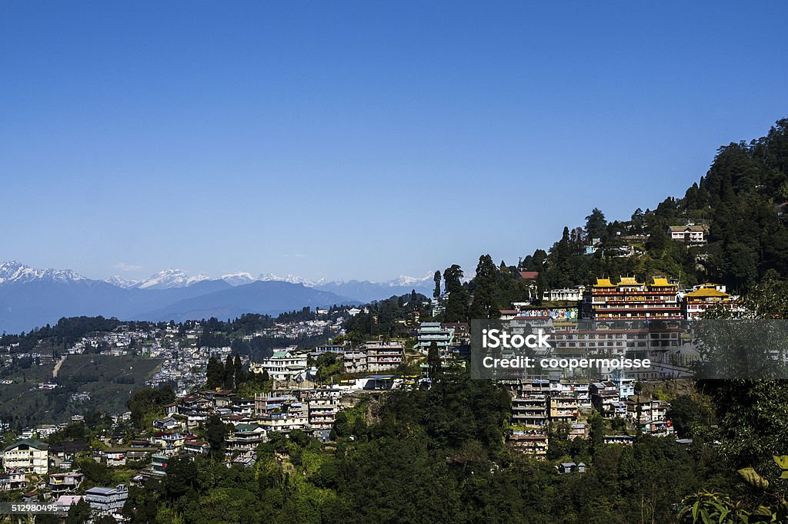

Darjeeling (/dɑːrˈdʒiːlɪŋ/,[14] Nepali: [ˈdard͡ziliŋ], Bengali: [ˈdarˌdʒiliŋ]) is a city in the northernmost region of the Indian state of West Bengal. Located in the Eastern Himalayas, it has an average elevation of 2,045 metres (6,709 ft).[10] To the west of Darjeeling lies the easternmost province of Nepal, to the east the Kingdom of Bhutan, to the north the Indian state of Sikkim, and farther north the Tibet Autonomous Region region of China. Bangladesh lies to the south and southeast, and most of the state of West Bengal lies to the south and southwest, connected to the Darjeeling region by a narrow tract. Kangchenjunga, the world's third-highest mountain, rises to the north and is prominently visible on clear days.[f][16]

At the time of the first British arrival, Darjeeling was known among its Lepcha inhabitants as Dorje-ling, or the "Place of the Thunderbolt."[g] According to the Oxford Concise Dictionary of World Place Names, Darjeeling is derived from the Tibetan Dorje ling or Dorje-glin, meaning "Land of Dorje," i.e. of the vajra, the weapon of the Hindu god Indra.[18]
Darjeeling lies between the Mechi and Teesta rivers in the Eastern Himalayas. In the 18th century, it was part of a boundary region that had stirred ambitions and insecurities in several South Asian states.[17] For the greater part of the century, the Chogyal-ruler of the northern Kingdom of Sikkim had asserted possession of this territory.[17] In the closing decades, the Gurkha kingdom of Nepal expanded eastwards to bring Darjeeling into its territory.[17] Its army stopped short of the Teesta, beyond which at the time lay the Kingdom of Bhutan.[17][19]
The Darjeeling hills (formally Darjeeling Himalayan hill region) comprise parts of Darjeeling district and all of Kalimpong district; specifically, they contain: Darjeeling Sadar subdivision, Kalimpong subdivision and Kurseong subdivision.[71] Darjeeling town lies in the Sadar subdivision. It is located at an average elevation of 2,045 m (6,709 ft)[10] on the Darjeeling–Jalapahar range which runs south to north starting at Ghum (Map 1). The range is Y-shaped with its base resting at Katapahar and Jalapahar and two arms diverging north of the Observatory Hill. The north-eastern arm dips swiftly and ends in the Lebong spur, while the north-western arm slopes gently, passing through North Point, and ends in the valley near the Tukver Tea Estate.[72] Kangchenjunga, the world's third-highest peak at 8,598 m (28,209 ft), which lies 74.4 kilometres (46.2 mi) to the north, is the most prominent mountain visible.[15][16]
Darjeeling has a temperate subtropical highland climate (Köppen climate classification: Cwb).[81] The average annual precipitation in Darjeeling is approximately 3,100 mm (120 in).[i] Eighty percent of the annual rainfall takes place between the months of June and September, due to the monsoon of South Asia.[83] The "June–May ratio," or the percentage by which the rain increases from May to June, is 2.6 or 260%.[83] In contrast, just 3% of the annual rainfall takes place between December and March.[83] Darjeeling's altitude—which is greater than some other regions of the Eastern Himalayas at the same latitude (27° N), such as the Assam hills—and its rarified air causes its UV radiation levels to be correspondingly higher. Its mean monthly UV radiance is approximately 4500 microwatts per square cm per day during the peak months of May, June, and July. It is 50% higher than the Assam hills to the east, whose altitude is 170 metres (560 ft).[84]
From the beginning of the twentieth century, Darjeeling's average temperature has increased by 4 °C, which is twice the world's average,[89] and the annual averages of its daily maximum and minimum temperatures have increased by greater margins.[89] During the same period, relative humidity has decreased by 7%,[89] and rainfall by 300 millimetres (0.98 ft) annually.[89] For its water the Darjeeling municipality and the surrounding hills depend to a large extent on perennial or seasonal jhora springs (see Map 1), especially during the pre-monsoon months from February to May.[90] The Senchal Lakes, two artificial reservoirs built in 1910 and 1932 in a forested high-altitude area to the southeast (see Map 2),[91] which are filled with water from a surrounding catchment area during the monsoon months, have a greatly reduced supply, as of 2016.[92] Darjeeling's explosive population growth in the period 1961–2011, and extensive deforestation even within the protected catchment area for the lakes, have caused many springs to have vastly reduced yields during the dry months from February to May. Of the 26 springs that had once fed the lakes, 12 have been affected.[90] Forests and pastures have shrunk from 78% in 1900 to 38% in 2000, and cultivated land, which contributes to soil erosion, has correspondingly increased during the same time from 20% to 44%.[93] By 2006, land records in Darjeeling showed that foodgrain-producing farmland had decreased proportionally, caused by accelerated levels of urbanisation and by subsistence farming giving way to commercial cropping, especially of tea.[94] In 2016, acid rain, which can be caused by air pollution and can in turn damage forests, was observed in the Eastern Himalayas; the pH value in Darjeeling was measured at 4.2.[95] A 2022 article quoting another 2016 study reported a pH value of 5.0±0.825 in the rainwater.[96]
